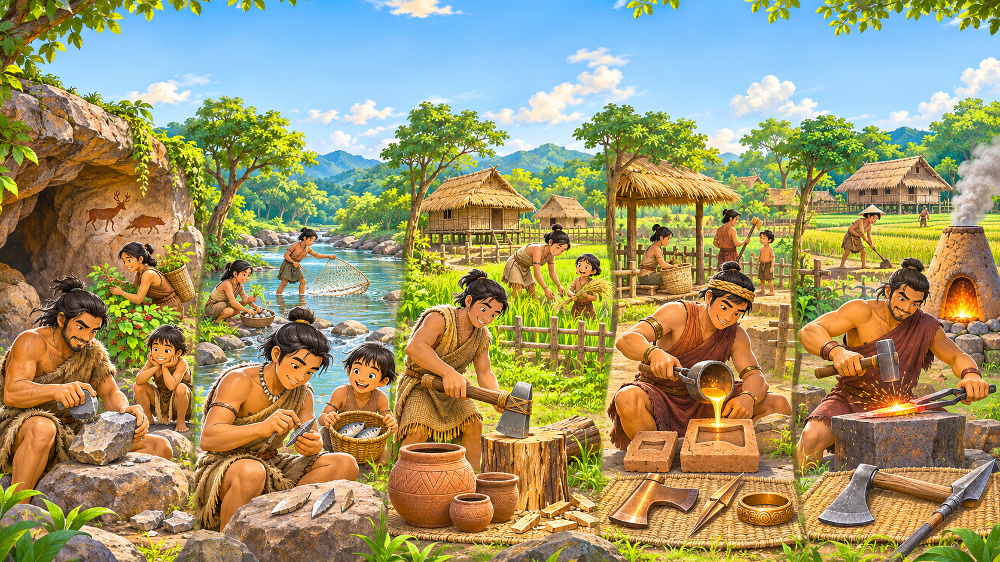

สมัยก่อนประวัติศาสตร์
เปิดแผนที่แล้ว ออกสำรวจห้าด่านจากยุคหินเก่าถึงยุคเหล็ก
พร้อมออกเดินทางตามรอยเรื่องราวจากอดีตหรือยัง?
เกมการเรียนรู้ประวัติศาสตร์สำหรับนักเรียนชั้นประถมศึกษาปีที่ 4
ยินดีต้อนรับ
ยังไม่มีคำถามที่รอคำตอบ
บัญชีที่เพิ่มจะบันทึกในเบราว์เซอร์นี้และใช้ได้ในแท็บอื่นของเครื่องเดียวกันเท่านั้น ยังไม่เชื่อมข้ามเครื่องหรือเป็นระบบบัญชีจริง
ปุ่มรีเซ็ตล้างหลักฐานและกิจกรรมของผู้เรียนคนนั้น เพื่อให้เริ่มด่านใหม่ได้ ข้อมูลต้นแบบเก็บในเบราว์เซอร์เครื่องนี้
| รหัสผู้เรียน | ชื่อที่แสดง | ความคืบหน้า | สถานะ | การจัดการ |
|---|---|---|---|---|
| 1111 | นักเรียนตัวอย่าง 1 | 0% | ยังไม่เริ่ม |
พร้อมออกเดินทางหรือยัง?
เปิดแผนที่แล้ว ออกสำรวจห้าด่านจากยุคหินเก่าถึงยุคเหล็ก
แผนที่นี้ยังล็อกอยู่ เรียนจบสมัยก่อนประวัติศาสตร์ก่อน แล้วกลับมาเปิดแผนที่นี้ภายหลัง
ทำกิจกรรมให้ผ่านตามลำดับ เพื่อเปิดด่านถัดไป
ลองทบทวนว่าเครื่องมือและวิถีชีวิตของผู้คนเปลี่ยนไปอย่างไรตลอด 5 ยุคที่เราเพิ่งสำรวจ

จบการทบทวนสมัยก่อนประวัติศาสตร์แล้ว · เนื้อหาด่านสมัยประวัติศาสตร์จะเพิ่มในลำดับถัดไป
อ่านข้อมูลการแบ่งยุคจากกรมศิลปากร ↗